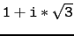

suivant: Les sommets d'un polygone
monter: Les points en géométrie
précédent: Le centre d'un cercle
Table des matières
Index
Les sommets d'un polygone : vertices vertices_abc sommets sommets_abc
sommets ou sommets_abc ou vertices ou
vertices_abc a comme argument
un polygone.
sommets ou sommets_abc ou vertices ou
vertices_abc renvoie la liste des
sommets de ce polygone et les trace.
Attention Si le polygone a n sommets la liste sera de longueur n.
On tape :
sommets(triangle_equilateral(0,2))
On obtient :
les points [pnt(0,0),pnt(2,0),pnt((2*(sqrt(3)*(i)+1))/2,0)] sont tracés avec une croix
On tape :
C:=sommets(triangle_equilateral(0,2))[2]
On obtient :
Le point d'affixe
 est tracé avec une croix et est noté C
Attention
Si on tape :
T:=triangle_equilateral(0,2,C);sommets(T[0])
On obtient :
les points [pnt(0,0),pnt(2,0),pnt((2*(sqrt(3)*(i)+1))/2,0)] sont tracés avec une croix
Si on tape :
C
ou
sommets(T[0][2])
On obtient :
Le point d'affixe
est tracé avec une croix et est noté C
suivant: Les sommets d'un polygone
monter: Les points en géométrie
précédent: Le centre d'un cercle
Table des matières
Index
Documentation de giac écrite par Renée De Graeve